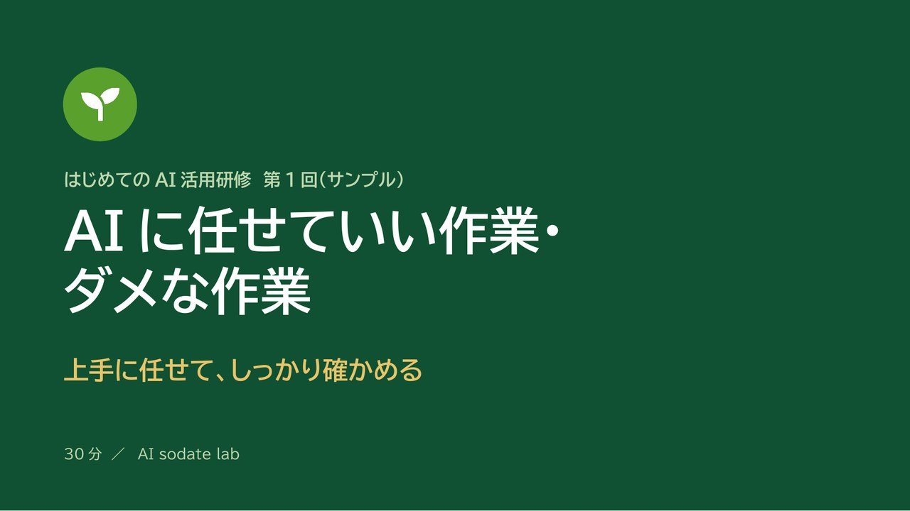

← 制作実績一覧へ戻る
見本 全10枚
セミナー資料「AIに任せていい作業・ダメな作業」
30分の社内研修を想定して作った、聞いた人が持ち帰れるセミナー資料です。AIに任せていい作業と、人が確かめる作業の線引きを、質問2つ・分担表・チェック3つにまとめました。

作ったもの
「AIは便利だけれど、どこまで任せていいか分からない」という人に向けた研修資料の見本です。話の内容を「質問2つ」「分担表」「チェック3つ」にして、聞いた人が明日から動きやすい形にしました。研修名は架空のサンプルです。
スライドを1枚ずつ見る
工夫した点
- 話の内容を「質問2つ」「分担表」「チェック3つ」にして、聞いた人が行動に移しやすい形にしました。
- 「任せてOK」と「任せてNG」を色で分け、迷ったときの2つの質問を先に見せています。
注意
研修名は架空のサンプルです。